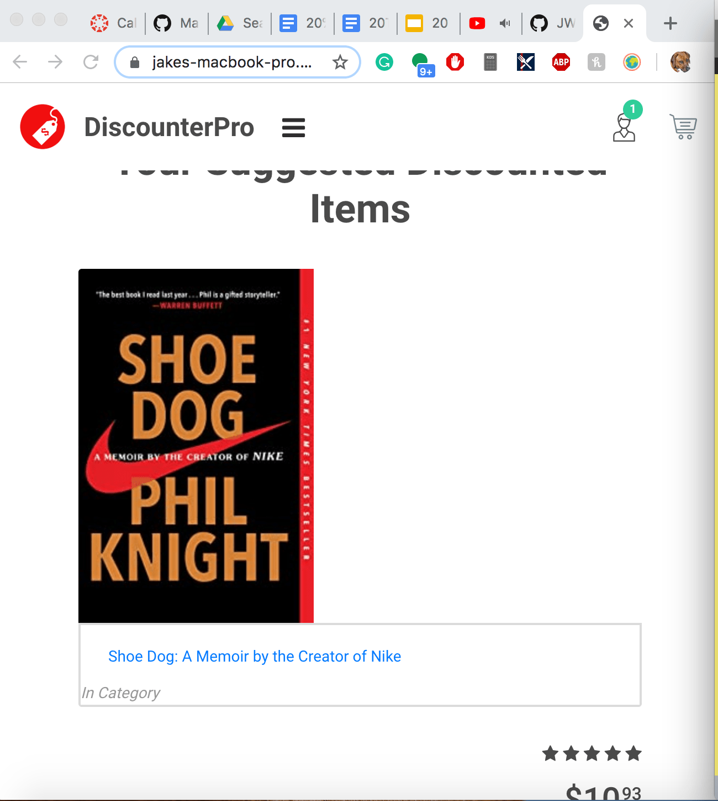

The File that, along with the src, contains all of the files that from my project. Contains:
A file that I did not use/modify in my project, yet that I think could have some cool applications that I could add onto later so I decided to keep it.
#### images
Contains the images and logos used in the website
#### index.html
The primary page which is loaded when the website is opened. This contains my javascript code and pretty much all of the html
Javascript folder which contains the javascript used by the template
plugin folder used in the template, I havent touched this folder
Another file I thought has potential, it is the screen that opens when you click on the product, I could either have the link go directly to the amazon page or go to this product.html section.
Contains all of the CSS styling
My folder containing all of the java code and the JSON file that is read in by the javascipt
JSON file that all of the data on the items is stored in.
contains all of the java files from when I was testing out possible methods of webscaping. The only one I use currently is the TakeInSearchedInfo.java file which is the one that actually uses jsoup to webscrape and take in/write the data to the JSON file.
Contains the jsoup library
All of the same methods as the Build folder (I would remove this but last time I did I spent an hour fixing all the damage it caused)
config folder for codekit and the server its running
Instructions:
Successful run for reference: 
Remaining bugs/ unimplemented features:
First and foremost, the formatting of the items on the website needs to be fixed up so that it is in rows of 3 items, the size of the pictures lines up with the adjacent box, and so that it looks more like the original template in general (I’m not sure what I did to mess it up.) Next, I will need to make it so my Java code also takes in the items URL address, which shouldn’t be too hard. Then I need to finish making it so the search box and whatever is inputted to it will be added to the interest list. Finally, I need to connect the interests section to the java code and have it run alongside the website; I will most likely do this through the use of an applet. I would also like to add to the products.html section but this was a lower priority.